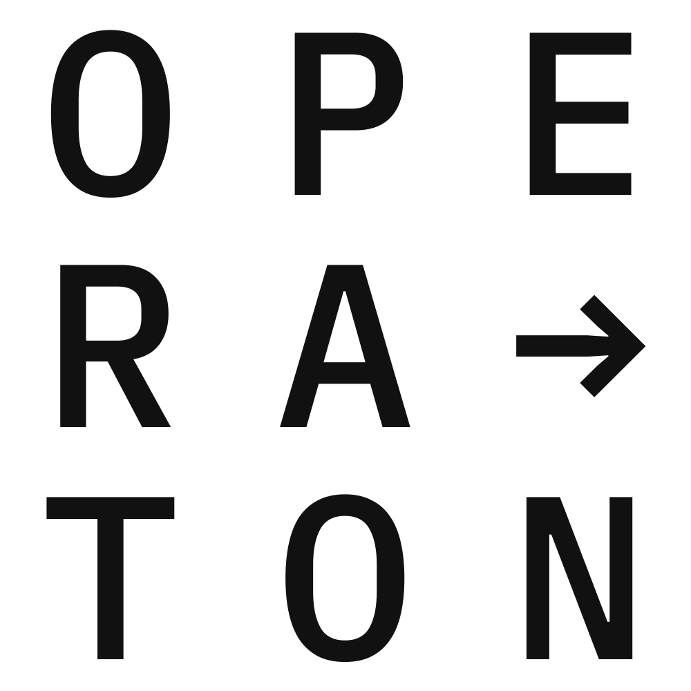

Your way beyond Camunda 7 CE End-of-Life
# What is Operaton? - State-of-the-art BPMN engine - Fork of Camunda 7 CE --- # Our vision - Provide a Free Open Source alternative to Camunda 7 CE - No single company controlling the project - No vendor lock-in - No license fees - No restrictions on usage - Seamless migration from Camunda 7 CE - Completely renew the code base - Provide a welcoming environment for contributors - Enable professional services by third parties - Sustainable BPM solution for the next decade --- # Who are we? ## Core Team - Tim Zöller (Lambdaschmiede GmbH) - Project Initiator - Former Camunda trainer - Andreas Zill (Freelancer) - Project Initiator - Documentation - Legal - Andreas Klein (DemandFlow GmbH) - Project Initiator - Documentation - Legal --- # Who are we? ## Core Team - Karsten Thoms (itemis AG) - Main contributor - Julian Haupt (backoffice.plus) - Social Media manager - Backports - Paul Hempel (Lambdaschmiede GmbH) - New web applications -operaton.org Website --- # Who are we? ## Frequent Contributors - Arne Deutsch (itemis AG): JUnit 5 migration - Wolfgang Schmoller (itemis AG): JavaEE -> JakartaEE migration - Javad Malaquti (itemis AG): Docker, Helm Charts --- # History - October 2024 - Creation of the fork - Re-Branding of Camunda 7 CE - Release 1.0.0-beta-1 - December 2024 - Release 1.0.0-beta-2 - Raise minimal Java version to 17 - Set up build infrastructure - First automated release with JReleaser - Enable static code and coverage analysis with SonarQube - January 2025 - Release 1.0.0-beta-3 - First release of "Operaton" distribution (formerly known as "Camunda Run") - Enablement of integration tests for all distributions - First release with Docker and Helm Charts - Massive reduction of Sonar findings - May 2025 - Release 1.0.0-beta-4 - First release with full JakartaEE 10 migration - Drop of JavaEE support --- # Roadmap ## Q2/2025 - Publish revised documentation - Founding of the Operaton e.V. non-profit organization - Release of new web apps beta (replacement for tasklist, cockpit and admin) ## Q3/2025 - Release of new web apps beta (replacement for tasklist, cockpit and admin) - Prepare semi-automatic migration path to Operaton ## October 2025 - End of life Camunda 7.24 CE - Release 1.0 based on 7.24 CE - Publish distributions via various packagers like Homebrew, Winget --- # Roadmap - 2026 and beyond - Release version 1.1 – No breaking changes - Further improvements based on our users needs - Remove deprecated code --- # Early Adopters - Ritense - OpenBPM - Sucurema - Bundesministerium für Arbeit und Soziales - (others that don't want to get publicly named) --- # Code Base Renewal - Raise Java to language level 17 - Drop support for legacy JavaEE containers - Raise dependencies to latest and secure versions - Migrate tests to JUnit 5 & AssertJ - Resolve security & static code analysis findings --- # Activity - 750 commits - 21 contributors - Changed files: 18.903 (8.454 unique) - Changed lines: - +152.513 - -180.351 - => - 27.838 - 3.800 workflow executions - 0 API breakages --- # Code Cleanup - Initial code base had 16k Sonar issues - 12k issues resolved - ~50% resolved with help of OpenRewrite --- # JUnit 5 migration - 25k automated test cases in JUnit 4 - Created a new extension library for JUnit 5  --- # Outlook - Documentation - Distributions
Q & A